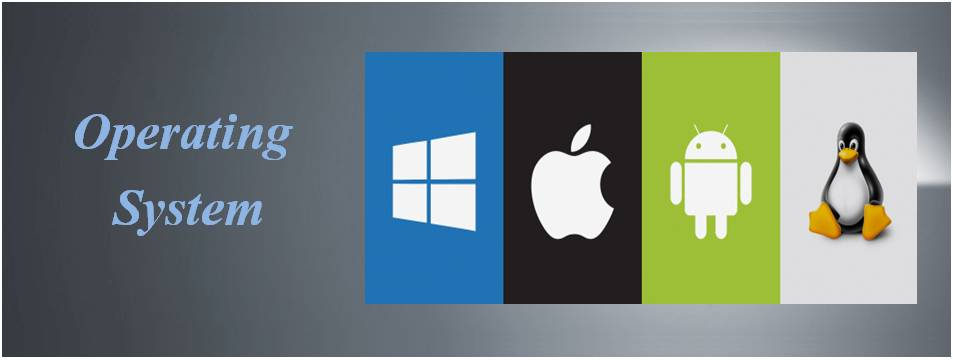

Pengantar Sistem Operasi
Definisi dan Konsep Sistem Operasi
Sistem Operasi (Operating System, OS) adalah kumpulan program yang bekerja sebagai perantara (intermediary) antara pengguna komputer dan perangkat keras komputer. Sistem operasi bertanggung jawab menyediakan lingkungan di mana pengguna dapat menjalankan program dengan nyaman, efisien, dan aman. Sistem operasi tidak hanya bertindak sebagai 'pengatur lalu lintas' bagi semua aktivitas komputer, tetapi juga mengoptimalkan penggunaan sumber daya komputer untuk meningkatkan performa secara keseluruhan.
Menurut Silberschatz (2018):
Sistem Operasi adalah program yang mengontrol eksekusi program aplikasi, bertindak sebagai antarmuka antara pengguna dan perangkat keras komputer, serta menyediakan layanan dasar untuk efisiensi dan pengembangan program.
Tujuan Utama Sistem Operasi
- Efisiensi: Mengoptimalkan penggunaan sumber daya sistem (CPU, memori, disk, jaringan).
- Kenyamanan: Menyediakan antarmuka yang ramah pengguna, baik dalam bentuk GUI (Graphical User Interface) atau CLI (Command Line Interface).
- Evolusi: Memungkinkan pengembangan program baru dan mendukung inovasi teknologi.
- Pengelolaan Sumber Daya: Mengkoordinasikan dan mengalokasikan sumber daya sesuai kebutuhan proses yang berjalan.
Fungsi Utama Sistem Operasi
Sistem operasi bertanggung jawab atas berbagai fungsi penting, termasuk:
- Manajemen Proses:
- Membuat dan menghapus proses pengguna serta proses sistem.
- Menjadwalkan proses dan menentukan kebijakan alokasi CPU.
- Sinkronisasi dan komunikasi antar proses (IPC - Inter Process Communication).
- Manajemen Memori:
- Menjaga catatan alokasi memori.
- Memutuskan proses mana yang akan dimuat ke dalam memori saat eksekusi.
- Melakukan swapping dan paging untuk manajemen ruang memori efisien.
- Manajemen Sistem File:
- Menyediakan mekanisme untuk penyimpanan, pengambilan, dan pembaruan data.
- Mengelola struktur direktori dan sistem izin file.
- Manajemen Perangkat I/O:
- Berinteraksi dengan driver perangkat keras.
- Mengatur antrian permintaan perangkat input dan output.
- Manajemen Keamanan dan Proteksi:
- Memberikan akses terkontrol ke sumber daya komputer.
- Melindungi sistem dari pengguna atau program yang tidak sah atau berbahaya.
Contoh Studi Kasus
Kasus: Anda membuka browser, mendengarkan musik, dan mengetik di Microsoft Word secara bersamaan.
Peran Sistem Operasi:
- Manajemen Proses: Mengatur ketiga aplikasi tersebut berjalan simultan tanpa crash.
- Manajemen Memori: Membagi RAM antara browser, pemutar musik, dan Word.
- Manajemen File: Membuka dokumen Word yang disimpan di hard drive.
- Manajemen I/O: Menyinkronkan aktivitas keyboard, mouse, dan output suara ke speaker.
Jenis-jenis Sistem Operasi
- Batch System: Menjalankan batch tugas tanpa interaksi pengguna (contoh: komputer zaman dahulu).
- Time-Sharing System: Banyak pengguna berbagi waktu CPU secara bersamaan.
- Real-Time System: Memberikan respon cepat terhadap input, digunakan di sistem kendali industri dan medis.
- Distributed System: Mengelola grup komputer terhubung yang bekerja bersama-sama.
- Embedded System: Sistem operasi ringan untuk perangkat seperti microwave, router, kendaraan.
Contoh Sistem Operasi Modern
1. Microsoft Windows
Dominan di pasar PC, cocok untuk bisnis dan individu. Kelebihan: user-friendly, kompatibel luas. Kekurangan: rentan terhadap virus.
2. Linux
Gratis, open-source, sangat fleksibel dan aman. Banyak dipakai di server dan superkomputer. Kekurangan: butuh learning curve tinggi untuk pengguna awam.
3. macOS
Sistem operasi eksklusif untuk produk Apple, menawarkan performa tinggi, keamanan, dan ekosistem terintegrasi. Kekurangan: perangkat keras mahal dan pilihan perangkat lunak lebih terbatas dibanding Windows.
4. Android
Sistem operasi mobile berbasis Linux yang paling banyak digunakan di dunia, mendukung berbagai jenis perangkat dengan fleksibilitas tinggi dan ekosistem aplikasi yang luas. Kekurangan: fragmentasi antar perangkat dan tingkat keamanan yang bervariasi tergantung produsen.
5. iOS
Sistem operasi mobile eksklusif untuk perangkat Apple seperti iPhone dan iPad, menawarkan performa tinggi, keamanan ketat, serta integrasi mendalam dengan ekosistem Apple. Kekurangan: terbatas pada perangkat Apple dan lebih sedikit opsi kustomisasi dibanding Android.